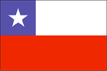

{kind=link}


![[Country map of Chile]](../maps/ci-map.jpg)
| Chile |  |
|
| | |
| Introduction |
Background: A three-year-old Marxist government was overthrown in 1973 by a dictatorial military regime led by Augusto PINOCHET, which ruled until a freely elected president was installed in 1990. Sound economic policies, first implemented by the PINOCHET dictatorship, led to unprecedented growth in 1991-97 and have helped secure the country's commitment to democratic and representative government. Growth slowed in 1998-99, but will likely recover in 2000.
| Geography |
Location: Southern South America, bordering the South Atlantic Ocean and South Pacific Ocean, between Argentina and Peru
Geographic coordinates: 30 00 S, 71 00 W
Map references: South America
Area:
total:
756,950 sq km
land:
748,800 sq km
water:
8,150 sq km
note:
includes Easter Island (Isla de Pascua) and Isla Sala y Gomez
Area - comparative: slightly smaller than twice the size of Montana
Land boundaries:
total:
6,171 km
border countries:
Argentina 5,150 km, Bolivia 861 km, Peru 160 km
Coastline: 6,435 km
Maritime claims:
contiguous zone:
24 nm
continental shelf:
200/350 nm
exclusive economic zone:
200 nm
territorial sea:
12 nm
Climate: temperate; desert in north; Mediterranean in central region; cool and damp in south
Terrain: low coastal mountains; fertile central valley; rugged Andes in east
Elevation extremes:
lowest point:
Pacific Ocean 0 m
highest point:
Cerro Aconcagua 6,962 m
Natural resources: copper, timber, iron ore, nitrates, precious metals, molybdenum, hydropower
Land use:
arable land:
5%
permanent crops:
0%
permanent pastures:
18%
forests and woodland:
22%
other:
55% (1993 est.)
Irrigated land: 12,650 sq km (1993 est.)
Natural hazards: severe earthquakes; active volcanism; tsunamis
Environment - current issues: air pollution from industrial and vehicle emissions; water pollution from raw sewage
Environment - international agreements:
party to:
Antarctic-Environmental Protocol, Antarctic Treaty, Biodiversity, Climate Change, Desertification, Endangered Species, Environmental Modification, Hazardous Wastes, Law of the Sea, Marine Dumping, Nuclear Test Ban, Ozone Layer Protection, Ship Pollution, Wetlands, Whaling
signed, but not ratified:
Climate Change-Kyoto Protocol
Geography - note: strategic location relative to sea lanes between Atlantic and Pacific Oceans (Strait of Magellan, Beagle Channel, Drake Passage); Atacama Desert is one of world's driest regions
| People |
Population: 15,153,797 (July 2000 est.)
Age structure:
0-14 years:
28% (male 2,137,826; female 2,044,546)
15-64 years:
65% (male 4,919,060; female 4,958,030)
65 years and over:
7% (male 453,234; female 641,101) (2000 est.)
Population growth rate: 1.17% (2000 est.)
Birth rate: 17.19 births/1,000 population (2000 est.)
Death rate: 5.52 deaths/1,000 population (2000 est.)
Net migration rate: 0 migrant(s)/1,000 population (2000 est.)
Sex ratio:
at birth:
1.05 male(s)/female
under 15 years:
1.05 male(s)/female
15-64 years:
0.99 male(s)/female
65 years and over:
0.71 male(s)/female
total population:
0.98 male(s)/female (2000 est.)
Infant mortality rate: 9.6 deaths/1,000 live births (2000 est.)
Life expectancy at birth:
total population:
75.74 years
male:
72.43 years
female:
79.22 years (2000 est.)
Total fertility rate: 2.2 children born/woman (2000 est.)
Nationality:
noun:
Chilean(s)
adjective:
Chilean
Ethnic groups: white and white-Amerindian 95%, Amerindian 3%, other 2%
Religions: Roman Catholic 89%, Protestant 11%, Jewish NEGL
Languages: Spanish
Literacy:
definition:
age 15 and over can read and write
total population:
95.2%
male:
95.4%
female:
95% (1995 est.)
| Government |
Country name:
conventional long form:
Republic of Chile
conventional short form:
Chile
local long form:
Republica de Chile
local short form:
Chile
Data code: CI
Government type: republic
Capital: Santiago
Administrative divisions:
13 regions (regiones, singular - region); Aisen del General Carlos Ibanez del Campo, Antofagasta, Araucania, Atacama, Bio-Bio, Coquimbo, Libertador General Bernardo O'Higgins, Los Lagos, Magallanes y de la Antartica Chilena, Maule, Region Metropolitana (Santiago), Tarapaca, Valparaiso
note:
the US does not recognize claims to Antarctica
Independence: 18 September 1810 (from Spain)
National holiday: Independence Day, 18 September (1810)
Constitution: 11 September 1980, effective 11 March 1981; amended 30 July 1989 and in 1993
Legal system: based on Code of 1857 derived from Spanish law and subsequent codes influenced by French and Austrian law; judicial review of legislative acts in the Supreme Court; does not accept compulsory ICJ jurisdiction
Suffrage: 18 years of age; universal and compulsory
Executive branch:
chief of state:
President Ricardo LAGOS Escobar (since 11 March 2000); note - the president is both the chief of state and head of government
head of government:
President Ricardo LAGOS Escobar (since 11 March 2000); note - the president is both the chief of state and head of government
cabinet:
Cabinet appointed by the president
elections:
president elected by popular vote for a six-year term; election last held 12 December 1999, with runoff election held 16 January 2000 (next to be held NA December 2005)
election results:
Ricardo LAGOS Escobar elected president; percent of vote - Ricardo LAGOS Escobar 51.32%, Joaquin LAVIN 48.68%
Legislative branch:
bicameral National Congress or Congreso Nacional consists of the Senate or Senado (48 seats, 38 elected by popular vote and 10 appointed (all former presidents are senators for life); members serve eight-year terms - one-half elected every four years) and the Chamber of Deputies or Camara de Diputados (120 seats; members are elected by popular vote to serve four-year terms)
elections:
Senate - last held 11 December 1997 (next to be held NA December 2001); Chamber of Deputies - last held 11 December 1997 (next to be held NA December 2001)
election results:
Senate - percent of vote by party - NA%; seats by party - CPD (PDC 14, PS 4, PPD 2), UPP 17 (RN 7, UDI 10), Chile 2000 (UCCP) 1, independents 10; Chamber of Deputies - percent of vote by party - CPD 50.55% (PDC 22.98%, PS 11.10%, PPD 12.55%, PRSD 3.13%), UPP 36.23% (RN 16.78%, UDI 14.43%); seats by party - CPD 70 (PDC 39, PPD 16, PRSD 4, PS 11), UPP 46 (RN 24, UDI 21, Party of the South 1), right-wing independents 4
Judicial branch: Supreme Court or Corte Suprema, judges are appointed by the president and ratified by the Senate from lists of candidates provided by the court itself, the president of the Supreme Court is elected by the 21-member court; Constitutional Tribunal
Political parties and leaders: Chile 2000 - main party is UCCP [Alejandro GARCIA-HUIDBORO]; Christian Democratic Party or PDC [Gutenberg MARTINEZ]; Coalition of Parties for Democracy ("Concertacion") or CPD [Eduardo FREI Ruiz-Tagle] - including PDC, PS, PPD, PRSD; Independent Democratic Union or UDI [Pablo LONGUEIRA]; National Renewal or RN [Alberto CARDEMIL]; Party for Democracy or PPD [Sergio BITAR]; Party of the South or PS [leader NA]; Progressive Center-Center Union or UCCP [Francisco Javier ERRAZURIZ]; Radical Social Democratic Party or PRSD [Anselmo SULE]; Socialist Party or PS [Ricardo NUNEZ]; Union for the Progress of Chile ("Alliance for Chile") or UPP [Arturo ALESSANDRI Besa] - including RN and UDI
Political pressure groups and leaders: revitalized university student federations at all major universities; Roman Catholic Church; United Labor Central or CUT includes trade unionists from the country's five largest labor confederations
International organization participation: APEC, CCC, ECLAC, FAO, G-11, G-77, IADB, IAEA, IBRD, ICAO, ICC, ICFTU, ICRM, IDA, IFAD, IFC, IFRCS, IHO, ILO, IMF, IMO, Inmarsat, Intelsat, Interpol, IOC, IOM, ISO, ITU, LAES, LAIA, Mercosur (associate), NAM, OAS, OPANAL, OPCW, PCA, RG, UN, UNCTAD, UNESCO, UNIDO, UNITAR, UNMIBH, UNMOGIP, UNTSO, UNU, UPU, WCL, WFTU, WHO, WIPO, WMO, WToO, WTrO
Diplomatic representation in the US:
chief of mission:
Ambassador Mario ARTAZA
chancery:
1732 Massachusetts Avenue NW, Washington, DC 20036
telephone:
[1] (202) 785-1746
FAX:
[1] (202) 887-5579
consulate(s) general:
Chicago, Houston, Los Angeles, Miami, New York, Philadelphia, San Francisco, and San Juan (Puerto Rico)
Diplomatic representation from the US:
chief of mission:
Ambassador John O'LEARY
embassy:
Avenida Andres Bello 2800, Santiago
mailing address:
APO AA 34033
telephone:
[56] (2) 232-2600
FAX:
[56] (2) 330-3710
Flag description: two equal horizontal bands of white (top) and red; there is a blue square the same height as the white band at the hoist-side end of the white band; the square bears a white five-pointed star in the center; design was based on the US flag
| Economy |
Economy - overview: Chile has a market-oriented economy characterized by a high level of foreign trade. During the early 1990s, Chile's reputation as a role model for economic reform was strengthened when the democratic government of Patricio AYLWIN - which took over from the military in 1990 - deepened the economic reform initiated by the military government. Growth in real GDP averaged 8% during the period 1991-1997, but fell to half that level in 1998 because of tight monetary policies implemented to keep the current account deficit in check and lower export earnings - the latter a product of the global financial crisis. A severe drought exacerbated the recession in 1999, reducing crop yields and causing hydroelectric shortfalls and rationing, and Chile experienced negative economic growth for the first time in more than 15 years. Despite the effects of the recession, Chile maintained its reputation for strong financial institutions and sound policy that have given it the strongest sovereign bond rating in South America. By the end of 1999, exports and economic activity had begun to recover, and a return to strong growth in 2000 is likely. The inauguration of Ricardo LAGOS in March 2000, succeeding Eduardo FREI, will keep the presidency in the hands of the center-left Concertacion coalition that has held office since the return of civilian rule in 1990.
GDP: purchasing power parity - $185.1 billion (1999 est.)
GDP - real growth rate: -1% (1999 est.)
GDP - per capita: purchasing power parity - $12,400 (1999 est.)
GDP - composition by sector:
agriculture:
6%
industry:
33%
services:
61% (1999)
Population below poverty line: 22% (1998 est.)
Household income or consumption by percentage share:
lowest 10%:
1.2%
highest 10%:
41.3% (1998)
Inflation rate (consumer prices): 3.4% (1999 est.)
Labor force: 5.8 million (1999 est.)
Labor force - by occupation: agriculture 14%, industry 27%, services 59% (1997 est.)
Unemployment rate: 9% (1999)
Budget:
revenues:
$17 billion
expenditures:
$17 billion, including capital expenditures of $NA (1998 est.)
Industries: copper, other minerals, foodstuffs, fish processing, iron and steel, wood and wood products, transport equipment, cement, textiles
Industrial production growth rate: -1.3% (1999 est.)
Electricity - production: 37.49 billion kWh (1999)
Electricity - production by source:
fossil fuel:
50%
hydro:
50%
nuclear:
0%
other:
0% (December 1999)
Electricity - consumption: 26.665 billion kWh (1998)
Electricity - exports: 0 kWh (1998)
Electricity - imports: 0 kWh (1998)
Agriculture - products: wheat, corn, grapes, beans, sugar beets, potatoes, fruit; beef, poultry, wool; fish; timber
Exports: $15.6 billion (f.o.b., 1999)
Exports - commodities: copper, fish, fruits, paper and pulp, chemicals
Exports - partners: EU 27%, US 16%, Japan 14%, Brazil 6%, Argentina 5% (1998)
Imports: $13.9 billion (c.i.f., 1999)
Imports - commodities: consumer goods, chemicals, motor vehicles, fuels, electrical machinery, heavy industrial machinery, food
Imports - partners: US 24%, EU 23%, Argentina 11%, Brazil 6%, Japan 6%, Mexico 5% (1998)
Debt - external: $39 billion (1999)
Economic aid - recipient: ODA, $50.3 million (1996 est.)
Currency: 1 Chilean peso (Ch$) = 100 centavos
Exchange rates: Chilean pesos (Ch$) per US$1 - 520.45 (January 2000), 508.78 (1999), 460.29 (1998), 419.30 (1997), 412.27 (1996), 396.77 (1995)
Fiscal year: calendar year
| Communications |
Telephones - main lines in use: 2.603 million (1998)
Telephones - mobile cellular: 197,300 (1995)
Telephone system:
modern system based on extensive microwave radio relay facilities
domestic:
extensive microwave radio relay links; domestic satellite system with 3 earth stations
international:
satellite earth stations - 2 Intelsat (Atlantic Ocean)
Radio broadcast stations: AM 180 (eight inactive), FM 64, shortwave 17 (one inactive) (1998)
Radios: 5.18 million (1997)
Television broadcast stations: 63 (plus 121 repeaters) (1997)
Televisions: 3.15 million (1997)
Internet Service Providers (ISPs): 26 (1999)
| Transportation |
Railways:
total:
6,782 km
broad gauge:
3,743 km 1.676-m gauge (1,653 km electrified)
narrow gauge:
116 km 1.067-m gauge; 2,923 km 1.000-m gauge (40 km electrified) (1995)
Highways:
total:
79,800 km
paved:
11,012 km
unpaved:
68,788 km (1996 est.)
Waterways: 725 km
Pipelines: crude oil 755 km; petroleum products 785 km; natural gas 320 km
Ports and harbors: Antofagasta, Arica, Chanaral, Coquimbo, Iquique, Puerto Montt, Punta Arenas, San Antonio, San Vicente, Talcahuano, Valparaiso
Merchant marine:
total:
45 ships (1,000 GRT or over) totaling 580,749 GRT/860,034 DWT
ships by type:
bulk 11, cargo 9, chemical tanker 8, container 2, liquified gas 2, passenger 3, petroleum tanker 4, roll-on/roll-off 4, vehicle carrier 2 (1999 est.)
Airports: 370 (1999 est.)
Airports - with paved runways:
total:
62
over 3,047 m:
6
2,438 to 3,047 m:
6
1,524 to 2,437 m:
20
914 to 1,523 m:
20
under 914 m:
10 (1999 est.)
Airports - with unpaved runways:
total:
308
over 3,047 m:
1
2,438 to 3,047 m:
4
1,524 to 2,437 m:
12
914 to 1,523 m:
68
under 914 m:
223 (1999 est.)
| Military |
Military branches:
Army, Navy (includes Naval Air, Coast Guard, and Marines), Air Force, Carabineros of Chile (National Police), Investigations Police
note:
normally administered by Ministry of Interior; in times of national emergency, Carabineros and Investigations Police are considered part of the military
Military manpower - military age: 19 years of age
Military manpower - availability:
males age 15-49:
4,012,900 (2000 est.)
Military manpower - fit for military service:
males age 15-49:
2,973,246 (2000 est.)
Military manpower - reaching military age annually:
males:
136,912 (2000 est.)
Military expenditures - dollar figure: $2.5 billion (FY99)
Military expenditures - percent of GDP: 3.1% (FY99)
| Transnational Issues |
Disputes - international: Bolivia has wanted a sovereign corridor to the South Pacific Ocean since the Atacama area was lost to Chile in 1884; dispute with Bolivia over Rio Lauca water rights; territorial claim in Antarctica (Chilean Antarctic Territory) partially overlaps Argentine and British claims
Illicit drugs: a growing transshipment country for cocaine destined for the US and Europe; economic prosperity has made Chile more attractive to traffickers seeking to launder drug profits; imported precursors passed on to Bolivia; domestic cocaine consumption is rising